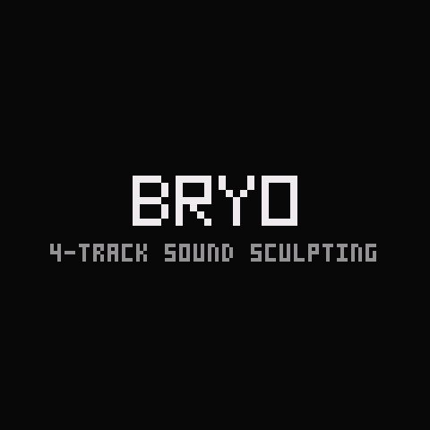
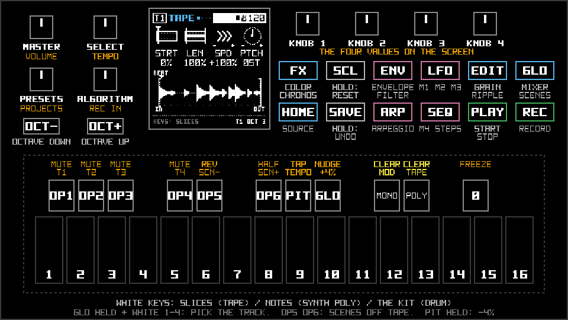
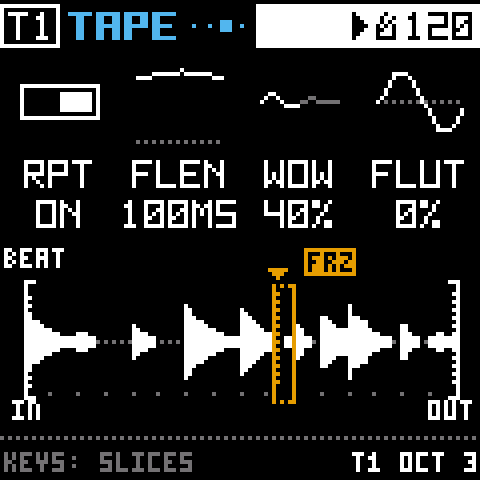
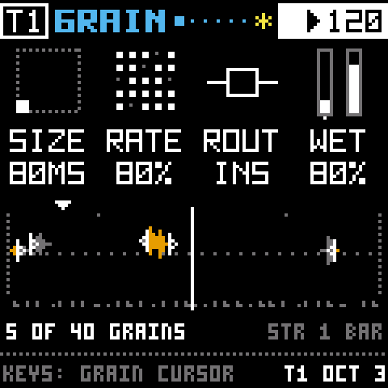
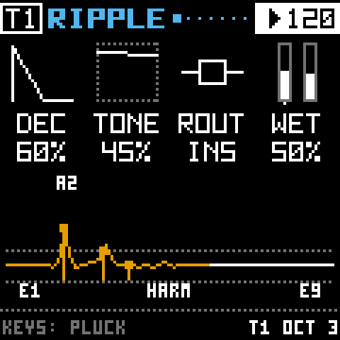
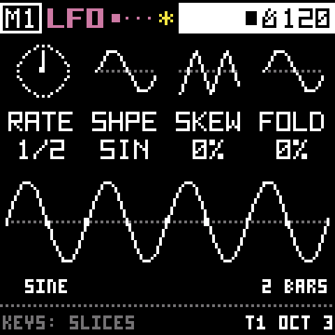
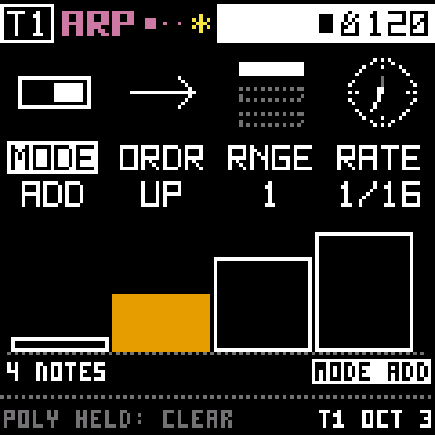
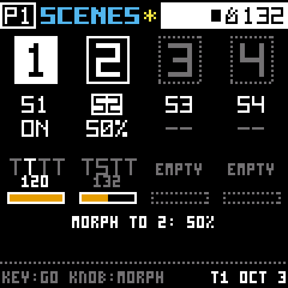

Firmware for the M-VAVE FM-1
Moss grows on tape.
Bryo turns the FM-1 into a four-track instrument for growing sounds. Play a loop, record over it, and let it drift. Everything is a pad and a knob away.

4 Track Sound Sculpting Instrument
Bryo is new firmware for the M-VAVE FM-1. It gives you four tracks. Each one starts with a sound and sends it through four effects, always in the same order.
Everything grows from the tape, a loop that lives in memory. There are no menus: each page shows four values and the four knobs change them. Every screen on this site comes from the code that runs on the device.
Quick start
There's no release yet. Bryo runs on a real FM-1 now, and I'd like it played for a while before anyone trusts it with their music. If you're happy building firmware, you can try it today, and Felucca's update path stays exactly as it was, so you can always go back.
-
Install
Build the firmware and put it on the FM-1, from the command line or the web installer.
-
First sounds
Find your way around the pads and the screen, and get each source making noise.
-
Your first song
Fifteen minutes from an empty project to a loop, a beat and a scene to drift into.
Watch your hands
Here's the FM-1 with Bryo on it. Pick a routine and follow along: the pads and keys light up as they're pressed, the knobs turn, and the screen shows what Bryo shows at each step.


Press HOME. You're on the track's source, here the TAPE page.
What's inside
A sound always takes the same path: a source, then GRAIN, RIPPLE, COLOR and CHRONOS. Around that line sit the things that keep it moving. Each one has its own page in the docs.
-

Sources
A tape loop, a nine-wave synth, a sampler across the keys, or a CR-78-style drum machine.
-

Grain
The last few bars, played back as tiny pieces. Or WARBLE's tired motor, or VINYL's dust.
-

Ripple
Strings, a comb or a filter bank, tuned to a chord the sound rings through.
-

Color
Drive, bit crush, noise that follows the sound, and a tilt EQ.
-

Chronos
A delay that ages like tape, and two rooms the tracks share.
-

Modulation
Four per track: LFOs, envelopes, a follower and a step sequencer with p-locks.
-

Arpeggiators
One per track, with a step rhythm that strays the way a player would.
-

Scenes
Four snapshots of the whole project. Tap to glide, or turn a knob to morph.
Full specs
- Hardware
- M-VAVE FM-1 (JieLi AC79), bare metal
- Tracks
- 4, each with a source and the full chain
- Sources
- TAPE (with repeat, wow and flutter); SYNTH (SIN TRI SQR SAW PLS, FM, PD, VOX, WT; two envelopes, chords); POLY (looping notes, TWIN); DRUM (1 to 4 bars)
- Effects
- GRAIN (grains, WARBLE or VINYL); RIPPLE (strings, comb, resonators or a 12-band bank, with FLOW); COLOR; CHRONOS (a delay and two shared rooms: room, plate, hall or spring)
- Modulation
- 4 per track: 3 that can each be an LFO, ADSR or FOLLOW, and a step sequencer with p-locks; up to 12 knobs each, stereo SPRD
- Arpeggiators
- 1 per track (notes, chords, slices or drums), plus RIPL ARP for RIPPLE; each with a step rhythm (8 patterns, 1 to 16 steps, VARY and EVOL)
- Scenes
- 4 per project, each with its own tempo: recall, step with OP5 and OP6, or morph between them with a knob
- Recording
- REC onto a tape, exact bars, overdub, bounce (REC + PLAY) and freeze to tape (REC + 0)
- Tape memory
- About 20 s shared across the tracks, IMA ADPCM at 22.05 kHz
- Mixer
- Level, LOW, HIGH, FILT and PAN per track; a master compressor; the project's key and 15 scales
- Storage
- 6 projects, 8 track presets plus 8 factory ones, 4 factory reels plus 6 of yours
- USB
- Shows up as a drive called BRYO (WAV in and out), and records what the computer plays
- Status
- Phases 1 to 9 of 10 built; running on an FM-1 since 2026-10-10
- Licence
- GPL-3.0-only, same as Felucca
Built in the S-4's image
Bryo owes its whole shape to the Torso Electronics S-4.
Four tracks, a sound at the head of each, a fixed line of devices after it, and a page of four values under four knobs: that's the S-4's idea, and it's the best one I've played. I own two of them. Bryo is my attempt to carry that way of working onto a little FM-1, and it only gets part of the way there.
If you like how Bryo works, buy an S-4. It's the real thing: a deeper instrument, a beautiful piece of hardware, and made by a small team that deserves the support.
Thank you, Felucca
Bryo exists because Felucca exists.
Leo Kuroshita (@kurogedelic) and Hügelton Instruments worked out how the FM-1 works, wrote firmware for it from scratch, and shared all of it under the GPL. Bryo started from Felucca 1.0.3 (b22a24b) and still runs on its hardware layer, update loader, USB and storage. If Bryo is useful to you, please thank them too.
Support the people who made this
Sponsoring Hügelton helps keep projects like Felucca going.